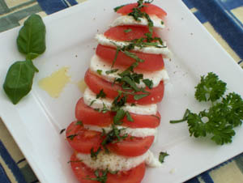

Mozzarella ã la Caprese
Ingrediënten (voor 4 personen)
- 6 tomaten
- 500 g mozzarella
- 20 blaadjes verse basilicum
- 3 el olijfolie
- vers gemalen peper
Bereiding
- Was en pel de tomaten en snijd ze in dunne schijfjes.
- Giet de mozzarella af en snijd ze eveneens in dunne plakjes
- Was de basilicumblaadjes en snijd ze in dunne reepjes.
- Leg afwisselend dakpansgewijs plakjes tomaat en kaas op een schotel.
- Besprenkel met olijfolie.
- Bestrooi met peper en de basilicum.
- Serveer met brood, bijvoorbeeld ciabatta.